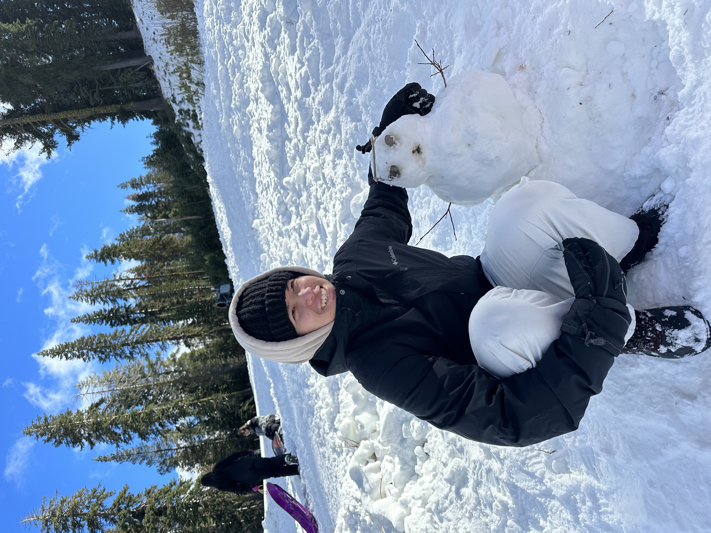
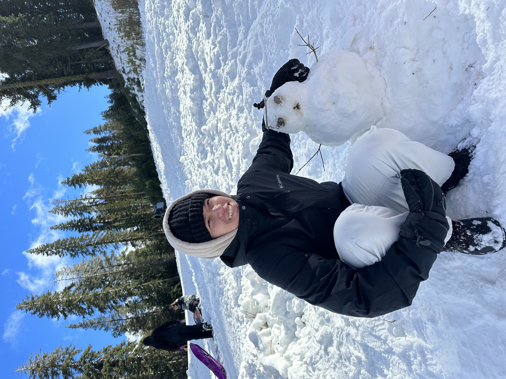
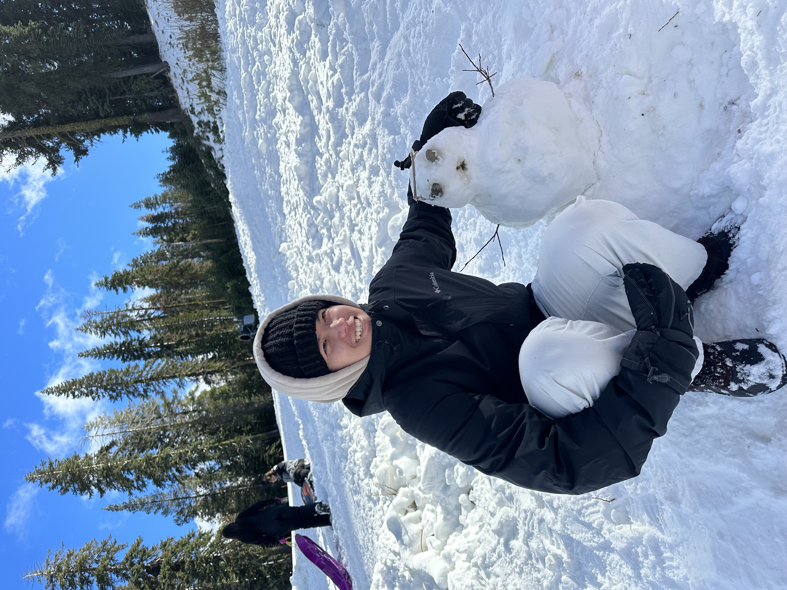

I am a graphic designer studying visual communications design at San Francisco State University. My goal is to use graphic design as a tool for marketing. It has become an outlet to express myself creatively. As a graphic designer, I hope to venture into a career of marketing. My academic journey has been marked by transformation, growth, and change. Beginning at Biola University and later transferring to Skyline Community College before settling at San Francisco State University, I've learned that change is inevitable and I now value the time that I have. These changes in my academic environment have not only broadened my perspectives but have also reinforced the understanding that my environment will always change. Throughout my educational and professional endeavors, I've improved not only my fundamental skills with Adobe Photoshop, Illustrator, and InDesign but also vital soft skills such as team leadership, communications, and organizational abilities. These skills have been valuable in my path of navigating the intricacies of the design industry, where collaboration, creativity, and effective communication are key. With each project I complete, I've become more skilled at translating my thoughts and ideas into a visually compelling design. I am eager to continue to use my design skills to create designs that promote my personality.
